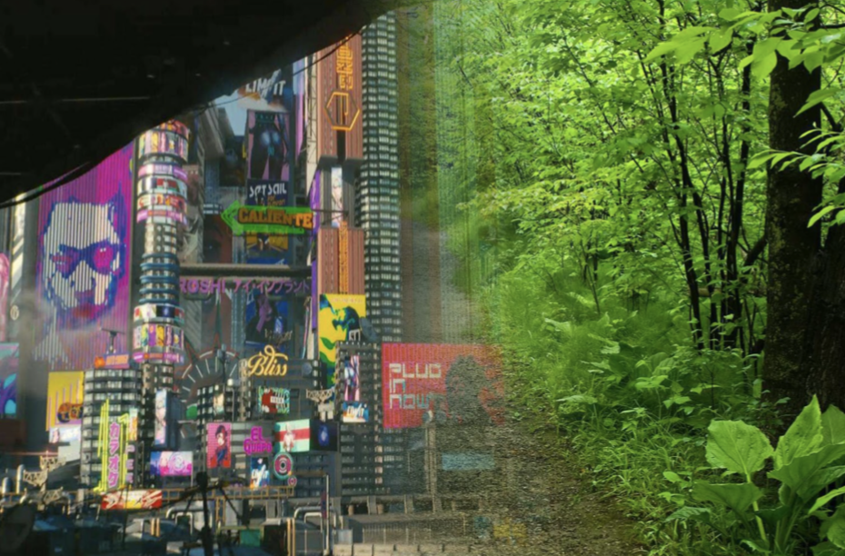

How do we build connections?
In “Future Way,” my group and I committed ourselves to exploring the boundaries of humanity, nature, and technology. Through the medium of a 3D plane, we wanted to create an environment where viewers could reflect on these ideals, thinking about technology’s influence on our lives and the juxtaposition of city and nature.
At a glance
3D virtual reality video
Tools
Metashape, Meshlab, Unity
Methods
Storytelling, World-building
Building the future
With my teammates’ strength in using Unity to composite landscapes, I wanted to make sure that our concept was just as meaningful. In addition to helping with the 3D material, I also made sure that our story and idea were accessible to the viewers.
Photogrammetrized Figurine
Conceptualizing from photogrammetry
Photogrammetry, the process of building a 3D model from photos taken of a real-life object, was a major component of our final work. We also used it in our daily lives, and when we started this project used these prior scans as inspiration.
Photogrammetrized Pedal
Ideating a storyline
One of the ways that we produced ideas for our storyline was by using the dual-sided nature of our concept and thinking about this in a 3D plane. Placing the viewer in between two different areas gives a natural divide, and we started ideating themes where it develops as the viewer moves along this divide.
Filling out a new world
Starting with inspiration from our initial scans, we built up a world with a combination of new scans and outside assets to make rich city and nature environments.

A human glimpse into the future
The final version of “Future Way” features sound effects, camera movements, and original 3D models in a VR environment. The viewer can explore the scenery as they are guided to the different points of interest, leading them to consider what role we play between these two opposites.
Team members
Evan Bird, Annie Li, Lishan Qin, Mia Zhang